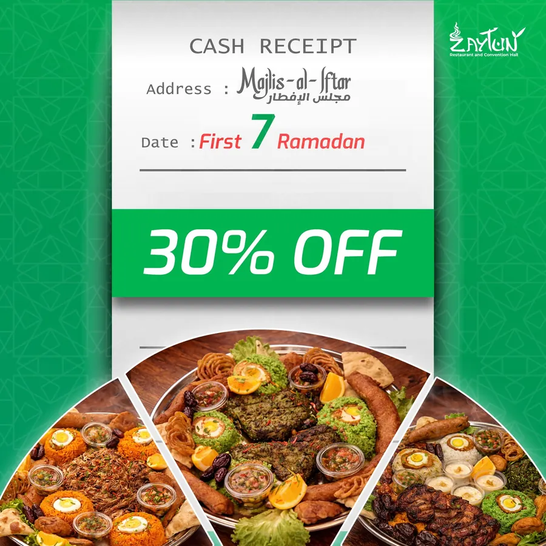
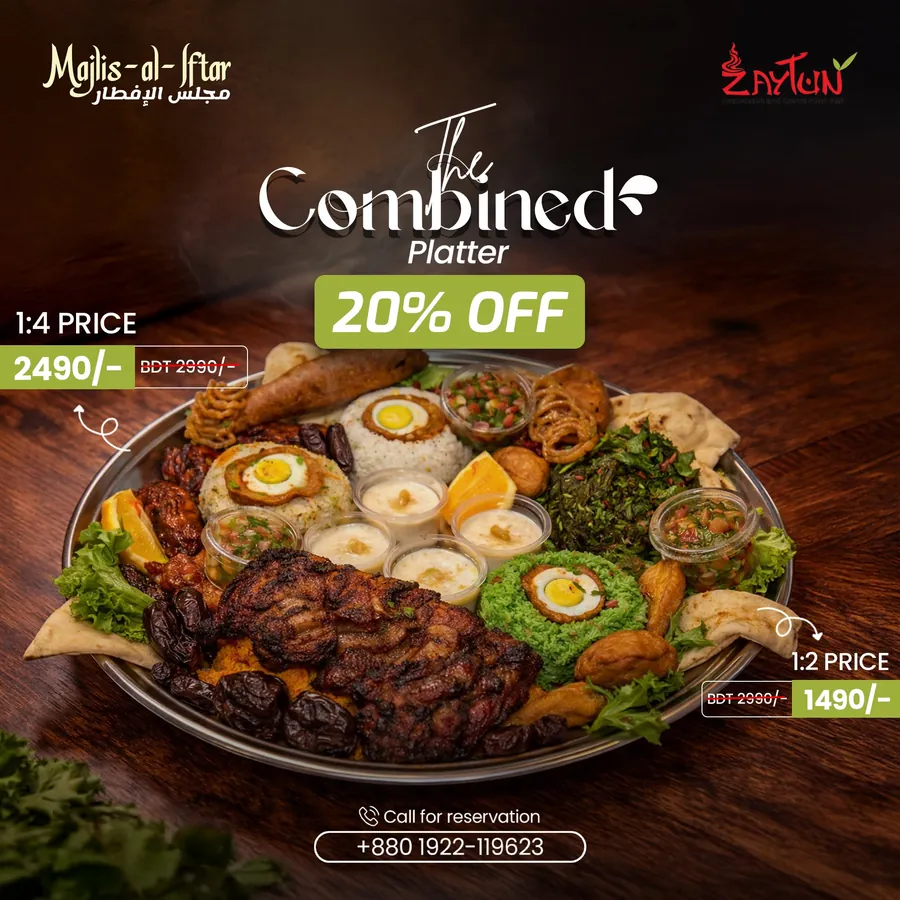
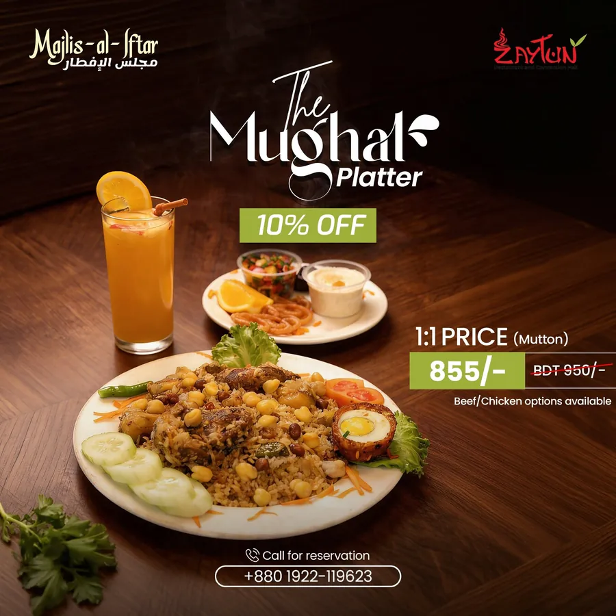
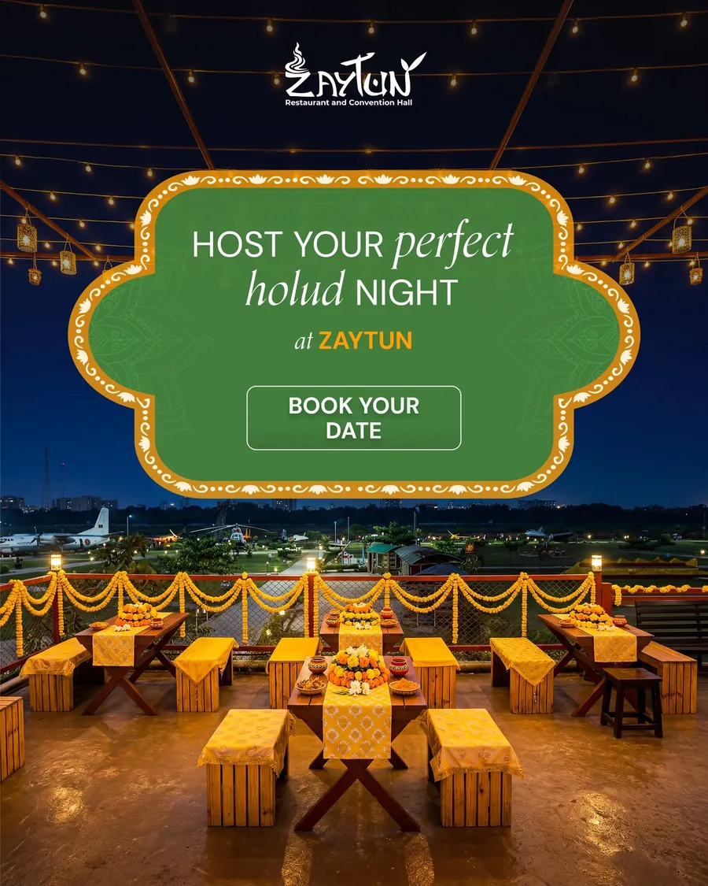

Zaytun Restaurant & Convention Hall · Social Media
দুই ভাষায় এক Brand Voice, Rooftop Restaurant-এর জন্য
আগারগাঁওয়ের বাগানঘেরা Rooftop-এ বিয়ে, হলুদ আর ইফতারের আয়োজন করে Zaytun। Facebook-এ Post হতো মাঝেমধ্যে, নিজস্ব কোনো Voice ছাড়াই। সেটাই গুছিয়েছি: ভাষা দুইটি, Brand Voice একটাই।
একনজরে
- মানুষকে টানতে আন্তরিক বাংলা, Event Package বোঝাতে পরিষ্কার English। দুই ভাষাতেই একই Brand Voice।
- ঈদ, পহেলা বৈশাখ আর বিয়ের মৌসুমে Post: ঠিক যখন মানুষ Booking দেয়।
- নিয়মিত ব্যবহারের তিনটি Post Format, সঙ্গে Rooftop-কেন্দ্রিক Reel Script।
- Client
- Zaytun Restaurant & Convention Hall
- অবস্থান
- আগারগাঁও, ঢাকা
- মাধ্যম
- কাজ
- Caption, Reel Script, Content Calendar




01 / 04
সমস্যা যেখানে
Venue জমজমাট, Page চুপচাপ। যখন-তখন Post, একেকটায় একেক Tone। Like থেকে Event Enquiry আসছিল না।
Audience-ও দুই ধরনের। ঢাকার Food Lover-রা বাংলায় Scroll করেন, লেখায় অনুভূতি খোঁজেন। বড় Budget-এর Event Planner-রা চান English-এ পরিষ্কার তথ্য। তখন কারও সঙ্গেই ঠিকমতো কথা হচ্ছিল না।
02 / 04
পরিকল্পনা যা ছিল
মানুষের Booking দেওয়ার সময় ধরে Calendar সাজানো: ঈদ, পহেলা বৈশাখ, মা দিবস আর বিয়ের মৌসুম।
- দুই ভাষার Voice Guide: বাংলায় উৎসবের আমেজ, English-এ সিদ্ধান্ত নেওয়ার কারণ।
- তিনটি নিয়মিত Format: খাবারের গল্পে Occasion Post, Soft CTA-সহ Event Package Spotlight, আর Rooftop Reel।
- Brand-এর সবচেয়ে দৃষ্টিনন্দন জায়গা, Rooftop-কে কেন্দ্র করে Reel-এর Script।
03 / 04
আমি যা করেছি
- Bilingual Caption: বাংলা Headline, English Body Copy, সঙ্গে Brand Hashtag।
- Venue, Catering আর Decor এক জায়গায়: Event Package Copy-তে এই সুবিধাটাই সামনে এনেছি।
- ঈদ, পূজা আর বিয়ের মৌসুমের জন্য উপলক্ষভিত্তিক Post।
- Rooftop ও Garden Walk-through Reel Script: দেখেই যেন Save ও Share করতে ইচ্ছা হয়।
04 / 04
ফল যেমন হয়েছে
3Content Pillar
2ভাষা, এক Brand Voice
মৌসুমভিত্তিকOccasion-led Calendar
আয়োজনবিয়ে, হলুদ, Corporate
Client-এর Analytics Private। তাই এখানে সংখ্যার দাবি নয়, কাজটা দেখুন।